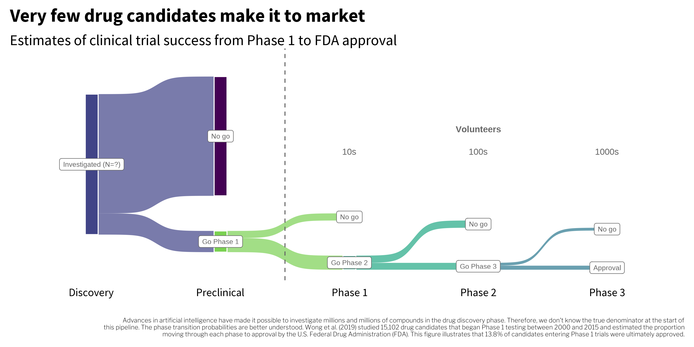

1 Global Health Research
1.1 What is Global Health?
New York County Courthouse, Lower Manhattan, New York City, circa 2009
Judge presiding over jury selection: And what do you do, Mr. Green?
Me: Global health research.
Judge:
Me: I study access to mental health services.
Judge: So health policy then?
Me: No, mostly intervention research.
Judge: Globally.
Me: No, not quite.
Judge: What is global health, Mr. Green?
Me: Well, you see…rambles…
Judge: Thank you, Mr. Green. You are dismissed.
I’ve had this conversation hundreds of times since that court appearance. Now when asked, I say something like, “global health takes a global perspective on public health problems,” drawing inspiration from Skolnik (2019). In the wake of the pandemic, I find that people nod along at this framing. It makes sense to them. Thanks, COVID-19!
Go any deeper below the ontological surface, however, and you’ll find that there is not a consensus definition of global health (Merson et al., 2018). We’ll adopt this one from Koplan et al. (2009):
Global health is an area for study, research, and practice that places a priority on improving health and achieving equity in health for all people worldwide. Global health emphasizes transnational health issues, determinants, and solutions; involves many disciplines within and beyond the health sciences and promotes interdisciplinary collaboration; and is a synthesis of population-based prevention with individual-level clinical care.
Take note of two key elements of their definition:
- it includes scholars, researchers, and practitioners working across disciplinary boundaries; and
- it goes beyond simply improving health to include the goal of achieving health equity.
To expand on the first point, this definition reflects the reality that global health challenges are complex, so the search for solutions must span disciplines. In the study of malaria, for example, you can read about the spread of the disease (epidemiology), the impact of illness on future productivity (economics), the merits of free or subsidized bed nets (public policy), mosquito habitats (ecology), the efficacy of vaccines to prevent the disease (medicine and statistics), rapid diagnostic tests (biomedical engineering), and the adoption and use of bed nets (psychology), just to name a few areas of inquiry.
The second point is that global health is action-oriented, seeking to achieve health equity for all people worldwide. The WHO (2021) defines equity as follows:
Equity is the absence of unfair, avoidable or remediable differences among groups of people, whether those groups are defined socially, economically, demographically, or geographically or by other dimensions of inequality (e.g. sex, gender, ethnicity, disability, or sexual orientation). Health is a fundamental human right. Health equity is achieved when everyone can attain their full potential for health and well-being.
Put another way, health inequities are unfair and unjust differences in healthcare access or health outcomes that can be prevented or fixed. Health inequities are structural, often resulting from decisions we make about who gets access to resources.
The consequence of inequity is often inequality. For instance, inequitable access to healthcare services can lead to unequal health outcomes—health inequalities—between groups. Differences in health status are also referred to as health disparities.
The COVID-19 pandemic has given us many examples of health inequities and disparities. For instance, data compiled by the website Health Inequities Tracker, visualized in Figure 1.1, show that through at least August 2021, Hispanics and Latinos in the United States were over-represented in COVID-19 hospitalizations, while non-Hispanic Whites were substantially under-represented (Satcher Health Leadership Institute, 2021).
Macias Gil et al. (2020) point to several factors that might help to explain why Latinos and Hispanics were disproportionately affected by COVID-19:
- Higher rates of co-morbid health conditions
- More likely to be underinsured or uninsured
- Undocumented immigration status
- Language barriers to accessing services
- Overrepresentation in “essential” jobs where working from home was not possible
- Greater financial pressures to show up to work, even if unwell or potentially exposed to the virus
- More likely to live in multigenerational homes where transmission was more likely
Several of these underlying factors, such as undocumented immigration status, fall into the category of social determinants of health (WHO, 2013).
The circumstances in which people are born, grow up, live, work and age, and the systems put in place to deal with illness.
Consider the directed acyclic graph, or DAG, in Figure 1.2 that illustrates how social determinants of health might have influenced the pandemic. I’ll introduce DAGs in more detail in a later chapter, so for now think of this as a (simplified) hypothesized conceptual model of what precipitates COVID-19 infection and hospitalization.
As represented in this DAG, hospitalization with COVID-19 is directly caused by infection with the novel coronavirus, SARS-CoV-2, but who gets infected is not completely random. Infectious diseases are social affairs, and some people are more vulnerable because of their context. For instance, vaccinated individuals are less likely to get infected, and vaccination rates are highest in the U.S. among the most educated. Looking further back in the causal chain, educational attainment is highest among groups without historical social inequities such as systematic racism.
A diagram like this suggests that to prevent future pandemics we need to gain a deeper understanding of the interaction between social determinants of health and disease risk. More importantly, it implies that we have work to do to fix the underlying societal inequities that make certain groups more vulnerable. As we’ve seen with COVID-19, technological solutions alone—like developing a vaccine in record time—may not be sufficient.
Another example of a COVID-19 inequity is global access to vaccines (see Figure 1.2). By October 2021, nearly half of the world’s population had received at least one dose of a COVID-19 vaccine, but the first 6.5 billion doses mostly went into the arms of citizens of wealthy countries. Less than 3 percent of people in low-income countries had received even one dose. While true that many low-income countries escaped the worst of the pandemic’s first few waves, the glacial roll out of vaccines globally—what some have decried as a vaccine apartheid—leaves many nations vulnerable to deadly new variants. This puts everyone at risk. Ellen Johnson Sirleaf and Helen Clark, the former heads of Liberia and New Zealand, respectively, state this plainly in the inaugural issue of PLOS Global Public Health (Sirleaf et al., 2021):
Achieving vaccination justice is the first great test of this pandemic era—it requires targets and aspirations for vaccine access to be determined by health criteria not a country’s economic status, and timely delivery not a two-speed world where high-income populations are fully immunized within months but the poor are denied access for years. Meeting the vaccine justice test will signal that we have both understood the interdependence that determines our planetary future and have the capacity to act on it. Failing the test will condemn us to a ‘forever crisis’ of insecurity and recrimination as virus variants are given free rein and new vaccines struggle to keep up.
1.2 What is Research?
This definition comes from Title 45 of the United States Code of Federal Regulations, Part 46, Subpart A, also known as the Common Rule.
Research is a systematic investigation designed to develop or contribute to generalizable knowledge. Let’s break down this definition.
- Research is systematic in that it follows a documented and repeatable methodology.
- Investigations include research development, testing, and evaluation.
- By generalizable knowledge, we mean that the investigation intends to advance our scientific understanding. The goal is to go beyond the collection of facts about a particular sample and make conclusions that have relevance for other scholars, practitioners, or policymakers.
For instance, you might interview parents of young children about their use of mosquito nets. You intend to analyze the transcripts and develop new ideas about the barriers to bed net use that you hope to publish in an academic journal. Other scholars will read this work use it to develop new theories of health behavior and create new interventions that promote bed net use. This is research.
But what if a journalist wants to write a feature article about the burden of malaria and interviews a few of the same parents? Is this research?
The Common Rule definition of research excludes journalism activities, public health surveillance activities in support of an order from a public health agency, criminal justice investigations, and operational activities related to national security.
No.
For one, the journalist might not follow a systematic method for deciding which parents to approach, how to conduct the interviews, or how to synthesize what they learn. Second, the journalist has a different objective. Whereas you wanted to systematically advance our understanding of barriers to bed net use—insights that might apply to different parents in other settings—the journalist intends to inform the public by telling the stories of a few specific parents.
Another way that a study can advance scientific understanding is by developing and testing scientific methods and procedures. For instance, a research team might plan a small pilot test to collect initial data that will inform the design of a larger study. In most cases, we’d consider these pre-study activities to be research—even if the team does not intend to publish the results—because the pilot study is part of the knowledge generation process.
But here again, intent matters. Let’s say Facebook (Meta) randomly assigns a small percentage of its users to receive email campaign A or campaign B and tracks which campaign generates the most clicks or sales. The company’s objective in this case is to determine which campaign optimizes their marketing spend for conversions, not to say something more general about human perception and behavior. Therefore, it’s not considered research.
As we’ll discuss in a later chapter, it’s always a good idea to consult with an Institutional Review Board to determine if your proposed work is considered research (and if it is, whether it falls under policies requiring ethical review).
1.3 What Makes Research Scientific?
Whether you’re designing a study that relies on qualitative methods, quantitative methods, or a blend of both, there are several main characteristics of scientific research that apply to global health (King et al., 2021; Leary, 2012):
- the approach is empirical;
- the procedures are public;
- the goal is inference; and
- the conclusions are uncertain.
THE APPROACH IS EMPIRICAL
People often ask me questions that, at least in theory, can be answered with data, but I don’t know the answers. In these situations, I like to remove my glasses, stare into middle distance, and say, “That’s an interesting empirical question”. It means, “I don’t know. We should collect some data.”
Science is built on systematic data collection. That’s what makes it an empirical endeavor. Expert opinion is a form of evidence, but it’s not empirical evidence. Empirical evidence comes from systematic observation, and the method of observation can be quantitative or qualitative. Contrary to what some people believe, empirical is not a synonym for quantitative.
THE PROCEDURES ARE PUBLIC

Scientific research uses public methods that can be examined and replicated. A Method section in a scientific paper is like a recipe. If you’ve ever tried to follow a confusing recipe, you can appreciate the importance of good documentation. Your study’s recipe must be clear (well written), thorough (no ‘dash’ of this or that), and shared publicly (not a secret passed down to lab members).
We care about complete and transparent reporting in science for several reasons. First, as consumers of research, we rely on authors’ descriptions of their empirical methods to come to our own conclusions about the findings. If research colleagues cannot inspect your methods, they will have little reason to trust your results. Second, no one study should ever rule the day. If the results of your study are robust, another research group should be able to follow the recipe and replicate the findings. When such findings are replicated, we all have more confidence in the results. Third, sharing your methods makes scientific progress possible.
THE GOAL IS INFERENCE
Empiricism is essential to science, but science is more than observation. To create generalizable knowledge, you need data and inference. There are two broad categories of inference: (a) descriptive inference and (b) causal inference.
Descriptive inference is using the data we observe to make conclusions about that which we don’t or can’t observe directly. For instance, you might survey 200 people about their health beliefs, but your real aim is to make conclusions about the broader group. You use the data you have from 200 people to make this inference.
Causal inference involves a different mental leap where we ask “what if” to make conclusions about causes and effects. Consider the case where we want to know which pill works better to resolve an illness, the red one or the blue one. The fundamental challenge to getting an answer is that we can’t give someone both pills simultaneously. An individual can only take one pill at a time. In this situation we might be able to randomly assign people to each type of pill as a tool for making a causal inference. But frequently, random assignment isn’t possible and we have to use other strategies for asking “what if”.
THE CONCLUSIONS ARE UNCERTAIN
Every method has limitations, every measurement has error, and every model is wrong to some extent. Take the estimation of maternal mortality rates as an example. Hogan published estimates for 181 countries (Hogan et al., 2010). Some countries, such as the United States, have vast amounts of data in vital registries that attempt to track all births and deaths. It’s not perfect, so we still estimate the maternal mortality rate using a statistical model.
This is still several hundred mostly preventable deaths per year. Currently in the U.S., the rate of maternal mortality among non-hispanic Black women is at least 2.5 times higher than the rate for non-hispanic White women.
As you can see in the left panel of Figure 1.4, the United States has a (relatively) low level of maternal mortality, between about 10-20 maternal deaths for every 100,000 live child births. Compared to some countries, the US has a lot of data points for estimating the level and trend in maternal deaths, so the uncertainty band is narrow.
Now take a look at Afghanistan on the right. Note that the y-axis scale is much larger in the 1000s, reflecting the fact that many more Afghan women die of causes related to pregnancy or childbirth. Next, pay attention to the width of the uncertainty band. It spans a range of more than 3000 deaths. Compare this to a range of fewer than 5 deaths in the US! This is because there are very few data points available to estimate the ‘true’ value in Afghanistan, and these individual data points can differ by more than 1000 deaths.
The takeaway message is that there is uncertainty in everything. No single estimate can be considered the answer. Embrace uncertainty and you will become a better scientist.
1.4 What Constitutes Global Health Research?
Global health research brings together scholars and practitioners from many different disciplines to tackle big challenges. Therefore, the methods of these disciplines are the methods of global health research. We can organize the research landscape as shown in Figure 1.8.
Research is divided into two main categories: basic and applied. Overlapping with applied research is an area of work called “monitoring and evaluation”, or M&E. Let’s examine what constitutes research before turning to M&E.
BASIC RESEARCH
Basic research is sometimes referred to as the ‘bench’ in the ‘bench to bedside’ cascade of research needed to take an idea from the lab to a new medical treatment. This is accurate but incomplete. Fields like psychology also conduct basic research into constructs like emotion and violence that seek to expand our understanding. This is not ‘bench science’ as typically imagined, but it’s basic research nonetheless.
Basic research—also known as “pure” or “blue skies” research—is the pursuit of fundamental knowledge of phenomena. For example, scientists conduct laboratory experiments to understand the parasitic life cycle and how parasites interact with humans at different stages. Another example is the scientific investigation of the properties of cancer cells to better understand how they grow and spread.
The information generated by basic science becomes the basis for applied science. Harvard neurobiologist Dr. Rachel Wilson explains this beautifully:
Watch Dr. Wilson’s full remarks.
The new therapies of today were the prototypes of yesterday. And the prototypes of yesterday were previously just findings in laboratories, and before that they were just an idea. Unless we have new ideas, we’re not going to have useful therapies. Great new therapies don’t just fall like apples from a tree.
APPLIED RESEARCH
Applied research focuses on specific problems or real-world applications. Much of global health research falls into the applied domain because our mission is to improve health and achieve equity in health for all people worldwide.
Clinical Research
Applied science takes many different forms, including clinical research. Clinical research is a broad field that aims to understand human disease, develop better ways to detect, diagnose, prevent, and treat disease, and to promote health (Roundtable et al., 2002). Table 1.1 lists several domains of clinical research.
| Domain | Description |
|---|---|
| Treatment/prevention research | Test new approaches for preventing or treating illness; includes clinical trials of drugs, biologics, devices, instruments, and behavioral interventions |
| Screening research | Develop and evaluate methods for detecting illness risk factors or markers |
| Diagnostic research | Develop and evaluate methods for identifying health conditions or illness |
| Genetic studies | Examine links between genes and disorders |
| Epidemiological studies | Study the patterns, causes, prevalence, and incidence of disease in a population |
| Health services research | Study how people access healthcare services, healthcare costs, and outcomes; operations research |
These phases are broadly similar across different regulatory bodies around the world, including the U.S. Federal Drug Administration (FDA), the European Medicines Agency (EMA), the Central Drugs Standard Control Organization in India, and the National Medical Products Administration in China, among many others. Here’s a brief overview of the phases from the NIH’s National Cancer Institute.
One type of clinical research is a clinical trial. Table 1.2 lists the phases of trials that drugs, biologics, devices, and instruments complete prior to going to market. In the early phases of drug trials, the objective is to understand how the compound affects the body. What is a safe dose that could be effective? Phase 3 trials put the optimal dose to the test, seeking to determine if the drug “works” and to quantify the size of the effect. Drugs that pass this test are typically approved for use by the governing regulatory body. Once a drug reaches market, Phase 4 trials monitor side effects and efficacy over time.
| Phase | Enrollment | Goal |
|---|---|---|
| Preclinical research | Are there signs that the drug candidate will have an effect in the lab? | |
| 0 | <10 | What happens in the body (pharmacokinetics) when a very low dose is administered to human subjects? (optional phase) |
| 1 | 10s | Is the drug safe? What is the best dose that balances possible effects with toxicity? |
| 2 | 100s | When using this optimal dose, is there any effect of the drug on clinical markers or health outcomes? |
| 3 | 1000s | What is the effect of the drug on clinical markers or health outcomes when compared to an existing treatment or placebo in a randomized evaluation? Success at this stage is required for regulatory approval in some countries. |
| 4 | Are there long-term adverse effects of the drug once it is available on the market? |
Click here to see a list of international trial registries.
In the United States, the FDA requires that most interventional studies of any regulated products with research sites in the U.S. be registered in the ClinicalTrials.gov trial registry (Food and Drug Administration Amendments Act of 2007, n.d.). Many countries have their own registries, and the World Health Organization maintains a web portal that searches across registries.
Click here to read about Aunt Debbie’s experience in a Phase 1 poliovirus trial at Duke University.
Trial registries are useful for researchers and patients alike. When my wife’s Aunt Debbie learned she had an aggressive brain tumor, we searched ClinicalTrials.gov and identified several trials recruiting patients for experimental glioblastoma treatments. Debbie decided to take part in a Phase 1 trial that injected modified poliovirus into her tumor. She lived for another five years and helped to advance the science of glioblastoma treatment.
Healthy volunteers and patients like Debbie are the backbone of clinical research. Their sacrifices, combined with the ingenuity of scientists and research teams, have created thousands of medical breakthroughs. But for every new drug approved, there is a trail of failure (see Figure 1.6). Recent studies estimate that fewer than 15% of candidates entering Phase 1 trials are ultimately approved by the FDA (Wong et al., 2019).

This pipeline does not include studies of behavioral interventions, social programs, or policies because the FDA only regulates drugs, biologics, devices, and instruments. Nevertheless, we still design studies to estimate the efficacy of interventions, programs, and policies, and many of these tests meet the World Health Organization’s definition of a ‘clinical trial’ (WHO, 2020):
The International Committee of Medical Journal Editors adopted this definition in 2007 and recommended that all clinical trials should be registered in an appropriate trial registry. Many peer-reviewed health journals follow this guidance and will not accept manuscripts from unregistered studies.
any research study that prospectively assigns human participants or groups of humans to one or more health-related interventions to evaluate the effects on health outcomes. (World Health Organization definition)
Dr. Pedro Alonso from the World Health Organization explains why this vaccine is a breakthrough in the prevention of malaria.
Translational, Implementation, and Policy Research
Bauer and Kirchner make the point that our failure to put good ideas to use is not a new phenonmenon. The British Navy observed in 1601 that citrus cured scurvy on long sea voyages—and collected confirming ‘trial’ evidence in 1747—but it was not until 1795 that using citrus became routine practice.
It’s a long road from idea to impact (Morris et al., 2011), and most ideas don’t complete the trip (Bauer et al., 2020). Practitioners of translational research point to four key bottlenecks where ideas often stall (see also Figure 1.8):
- T1: Translation from basic science to clinical research
- T2: Translation from early clinical trials to Phase 3 trials and beyond with larger patient populations
- T3: Translation from efficacy trials (i.e., Phase 3 trials) to real-world effectiveness through implementation research
- T4: Translation from evidence about delivery at scale to the adoption of new policies
Translational research originally focused on moving from “bench to bedside”, or from basic research in the lab to clinical research with humans (T1), and later expanded to address the challenge of moving from early to late-stage human trials (T2). Today we recognize that other bottlenecks (T3 and T4) prevent good ideas from impacting population health and policy (Woolf, 2008).
For instance, we know that giving children a simple mixture of water, sugar, and salts when they are dehydrated from diarrhea can prevent death in 90% of cases, but only 4 in 10 children receive this life saving oral rehydration therapy [ORT; Dadonaite (2019)]. And each year, several hundred thousand children under five years die from diarrheal diseases.
This is an example of a ‘delivery gap’ or ‘know-do’ gap in global health—the space between discovering what works and delivering the solution at scale (see Figure 1.7 for other examples).
Work in this area has evolved independently across several disciplines. In addition to translational research and implementation research, you can find references to dissemination science, diffusion of innovations, quality improvement, knowledge transfer, and learning healthcare systems.
Policy and implementation research, or PIR, aims to close these gaps. PIR is the science of scale up (Kruk et al., 2016). It combines implementation research with health policy and systems research.
Implementation research is the study of strategies for expanding the reach and coverage of tested ideas to improve population health. A common scenario is where intervention research demonstrates that a treatment is efficacious, such as ORT, but take-up is low and slow, thus limiting its impact. The implementation research question is how to best promote its use.
How is implementation science different from implementation research? Implementation science develops the frameworks and methods that are used in implementation research. Click here to watch an introductory workshop on implementation science from Northwestern University.
Health policy and systems research shares the same goal of population impact but takes an even broader view of the systemic and policy factors that can hinder or facilitate scale-up. Take for example a retrospective analysis by Lam et al. that evaluated the impact of policymaking in Uganda on ORT and zinc coverage (Lam et al., 2019). The authors triangulated data from various sources on government actions, distribution of supplies, and treatment with ORT, and estimated that the proportion of young children with diarrhea who received ORT increased 30-fold between 2011 and 2016, from 1% to 30%. Their policy analysis concluded that government actions likely made the difference.
MONITORING AND EVALUATION
Another area of applied work in global health is monitoring and evaluation (M&E), also known as program evaluation.
Economist and 2019 Nobel laureate Dr. Ester Duflo made a similar argument three decades after Campbell in a great TED Talk on social experiments to fight poverty.
Evaluation
Program evaluation became commonplace in the United States by the end of the 1950s and grew dramatically in the 1960s as the federal government expanded and introduced new social programs. Lawmakers wanted accountability, and the evaluation of social programs took off (Rossi et al., 2003). But is program evaluation really research?
Methods giant Donald Campbell thought so (Campbell, 1969):
The United States…should be ready for an experimental approach to social reform, an approach in which we try out new programs designed to cure specific problems, in which we learn whether or not these programs are effective, and in which we retain, imitate, modify or discard them on the basis of their effectiveness on the multiple imperfect criteria available.
But not everyone agrees. Some have argued that program evaluation is really designed for program implementers and funders, and that the messy nature of program implementation requires a loosening of research standards (Cronbach, 1982).
In their introductory text on evaluation, Rossi et al. (2003) strike a balance in views on this question of whether program evaluation is research. Their answer is perhaps a bit unsatisfying but is arguably true nevertheless: It depends. In essence, program evaluations should be as rigorous as logistics, ethics, politics, and resources permit—and no less. Some evaluations are more rigorous than others and will meet the definition of research (a systematic investigation designed to develop or contribute to generalizable knowledge). For this reason, in Figure 1.8 I represent Monitoring & Evaluation as a block that intersects applied research but extends outside the research boundary.
Impact Evaluations
A clinical trialist who conducts RCTs for a living is unlikely to refer to a clinical trial as an ‘impact evaluation’, even though an RCT is a type of impact evaluation. This language is more commonly used by economists and others who study the impact of social sector programs and interventions. This video from the World Bank introduces impact evaluations.
Evaluations can take different forms and serve various purposes. A subset of both applied research and program evaluation is the impact evaluation. An impact evaluation is a study that aims to quantify the causal effect—or impact—of a program or policy on some outcome of interest. There are several research designs that can generate evidence of impact. One example is the randomized controlled trial, or RCT, a mainstay of Phase 2 and Phase 3 clinical trials. Not all impact evaluations use random assignment to make causal inferences, but they all share the goal of making a cause-and-effect claim. As we’ll see in later chapters, the strength of this claim rests on the assumptions of the particular research design.
Monitoring
Program monitoring is concerned with documenting the implementation of programs and interventions. How are resources being used? How many people participate? Does the program reach the intended targets? Not all programs are evaluated (“do they work?”), but most are monitored (“what happened?”) to some degree for accountability to funders. Researchers can use monitoring data to document participants’ exposure to the program and to conduct economic analyses related to program costs and impacts.
A related activity is the process evaluation. A process evaluation goes beyond monitoring counts and tallies, largely an administrative task, to ask if a program is being delivered as intended. This gets at the question of fidelity of the implementation to the original design. Process evaluations are essential for impact evaluations: If a program fails to show an impact, the next question is why? Did the program fail because the idea or theory behind the program was wrong (theory failure)? Or was the implementation of the program so troubled that there was never a chance for success (implementation failure)?
1.5 Who Funds Global Health Research?
According to Micah et al., “Development assistance for health refers to the financial and non-financial resources that are disbursed through international development agencies to maintain or improve health in low-income and middle-income countries.”
Billions of dollars are spent on global health priorities every year. For instance, the international community disbursed $35-40 billion in development assistance for health yearly from 2010 to 2019. In 2020 this figure jumped to $55 billion because of the COVID-19 pandemic, with the United States accounting for one-quarter of the 2020 total ($14 billion) (Micah et al., 2021). Since the mid-2000s, most of this money has flowed to infectious disease programs (Figure @fig-funding).
Development assistance for health includes funded research, but it’s not inclusive of all research in low- and middle-income countries (e.g., does not include domestic spending on research). Nor does it capture research on global health issues in wealthy nations. Inequities in health exist everywhere, so by definition global health research is a broad domain. It’s difficult to put a dollar amount on the enterprise as a whole. A 2013 analysis estimated that the global investment in health research and development (R&D) topped $300 billion (in 2021 dollars) (Røttingen et al., 2013).
According to this analysis, most investments in health R&D come from private industry (60%), with the rest coming from the public sector (30%) and other sources (10%). Very little money is directed to pharmaceutical products and technologies for global health priorities that disproportionately affect poor countries—less than $4 billion in 2019 (Policy Cures Research, n.d.). In this 2019 accounting, public and philanthropic funders provided almost 90% of the money. The two leading funders were the United States National Institutes of Health (44%) and the Bill and Melinda Gates Foundation (16%), contributing nearly two-thirds of all research dollars between them.
The model for investments in R&D for health is funding from the rich, to the rich, (mostly) for the rich.
1.6 Who Sets the Agenda and Conducts Global Health Research?
This is important context because funders have an outsized role in setting the research agenda (Sridhar, 2012). Outside of industry, researchers depend primarily on grants to fund their work. As nearly all global health research funding comes from governments and philanthropies in high-income countries, the global health research agenda is set in large part by the wealthy (Ii et al., 2018).
The global health research agenda is also, in large part, carried out by the wealthy. Only a fraction of 1% of funding for biomedical research goes directly to recipients in low-income countries (WHO, n.d.). In-country researchers too often only play the role of partner or collaborator, rather than principal investigator, if even consulted (Kyobutungi et al., 2021). We’ll revisit these power imbalances, and what can be done to chart a more equitable and inclusive course for global health research, in the next chapter.
1.7 Where is Global Health Research Published?
Editors at The Lancet discuss publishing global health research.
Global health research is published in medical journals (e.g., The Lancet, JAMA), general science journals (e.g., Science, Nature, PLOS ONE), discipline-specific journals (e.g., The Journal of Immunology, Epidemiology), and disease-specific journals (e.g., AIDS, Malaria Journal). Journals specializing in global health research include The Lancet Global Health, BMJ Global Health, Global Health: Science and Practice, and PLOS Global Public Health.